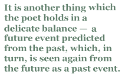

Geoff Page
Close read of ‘A U-Boat Morning, 1914’
A U-Boat Morning, 1914
will come as we perform the mundane toil,
say, tossing the breakfast scraps astern,
or washing down the maindeck among the oblongs
of sail-shadow. The morning sun
will mint its coins across a lazy sea,
the weather tacks and sheets will rise and fall
in languid intersectings of the sea-rim.
And there, so sudden, ordinary, too close
to dodge, or do anything about but wait for
with quiet interest, will be the thing of hearsay,
cigar profile, stub tower, little gun, so credible,
for all that it will be the first such vessel
we will have seen outside some journal’s
crude picture.
Through his loudhailer,
the officer will be polite, but firm,
reading the English translation from a card.
Fifteen minutes. We’ll stow such extra food,
water, charts, as time will allow,
also oilskins, a mouth organ, a piece
of unfinished scrimshaw perhaps, nothing bulky,
then lower the boats, and stand off from the barque
at the distance we will have been directed to.
Oddest for our sense of what is proper
will be the sight of the helm unmanned out there
in open sea.
And this will be the manner
a moment in time will surface to say, Of course
your lives are free. Of course they are compelled,
as we watch, quiescent, attentive, the lifeboats
gentle as hammock sway in the swell beneath us,
the little gun puffing its little smoke,
and thin smoke oozing from somewhere on board.
Gradually our home will lean into
its odd stricken angle, and spill wheatgrain
from the holes in her side, slipping under,
natural as a sleeper turning under blankets.
When it is done, the captain will salute us
just once, the submarine chug away, routine
as a mailboat.
And without undue hardship
we will survive, but no-one there will serve
in sailing ships again. This is how
an ancient confidence will vanish
casually like a fashion in jokes. Instead
we’ll live into a time strange to us,
we’ll live aware of how the unborn have
their faces turned away from all we took
for granted, as stubborn or quizzical, we will
submit to someone else’s scheme of what
is pressing, waste on the floor of life’s renewal.
And if this quiet impending morning leaves
one thought in mind, it might be wheatgrain
fanning from a ship across the ocean’s dark
like brassy beads, like fabulous golden blood.
Alan Gould
[from The Past Completes Me: Selected Poems 1973-2003 (UQP, 2005)
Alan Gould’s poem “A U-Boat Morning, 1914” is one of his most typical but also one of the best in his selected poems, The Past Completes Me. Characteristically, Gould, a contemporary Australian poet based in Canberra, views the grain ship’s sinking from at least two removes in time. The poet is writing a dramatic monologue in the mid-1990s from the viewpoint of someone who is anticipating by some years an event that will happen in 1914.
There is much more to this poem, however, than any mere cleverness with viewpoint. Gould wants to emphasise both the extraordinary and the ordinary aspects of the sinking. It all happens while the sailors are at “mundane toil”. The boat slips under the water “natural as a sleeper turning under blankets.“ And, afterwards, the submarine will “chug away, routine / as a mailboat.“
Conversely, however, for the narrator, it is an event without precedent and one that will change his life forever. For him and his fellows “it will be the first such vessel / we will have seen outside some journal’s / crude picture.” Afterwards, he understands he will be merely “waste on the floor of life’s renewal”. The event may seem ordinary but the wheatgrain (and all that it symbolises) fans out from the ship “like fabulous golden blood”. This is hardly a mundane image.
To hold these such contradictory elements in balance is a key element in the poem’s charm. No less important, however, is the way the poem offers a last glimpse into a time when war was still a little chivalrous and played by the rules. Within two years of this relatively merciful sinking, there would come the massive destruction suffered by both sides in the battle of the Somme. Back in 1914 however, the German U-Boat commander, “polite, but firm, read(s) the English translation from a card.” The sailors are given time to escape; even to survive the rest of the war. It will not be this way again, we may be sure of that.
What lends this situation even greater poignancy is Gould’s use of the future tense. Such small decencies are anticipated by the sailor but we know from our perspective how short-lived they would be. It is another thing which the poet holds in a delicate balance — a future event predicted from the past, which, in turn, is seen again from the future as a past event. It’s a clever but meaningful conundrum — not hard to see why Gould called his selected poems The Past Completes Me.
Some critics and readers have, over time, misread Gould’s career-long preoccupation with sail. Though a kind of nostalgia for this graceful and and highly-skilled mode of transport is certainly part of the interest in “A U-Boat Morning, 1914“, Gould is much more concerned here, as in many of his other poems, with sailing as a vehicle for moral and metaphysical speculation. His spokesmen rarely recall or predict events simply for their own sake or for their visual beauty. So what, then, are the moral speculations to be found in “A U-Boat Morning, 1914”?
One obvious one is the relative reluctance with which human decency gives way to internecine slaughter on an industrial scale. Gould is reminding us that there were once (relative) decencies in humanity’s (seemingly-unavoidable) war business and that they might be retrieved if only we had perhaps the courage to imagine such a development. That is, if we do not fall into despair, cynicism and apathy.
Another, more benign concern is the disappearance of successive technologies and the craftsmanship that goes with them. Gould’s narrator does not wax excessively about this. He accepts that his “ancient confidence will vanish / casually like a fashion in jokes.” He is left, not so much with bitterness at the destruction of his way of life and the relevance of his skills, but with a single image: “wheatgrain / fanning from a ship across the ocean’s dark / like brassy beads, like fabulous golden blood”. The narrator laments but he also accepts. This, Gould is implying, is as it should be.
Technically, the poem supports the continuing relevance of blank verse as a vehicle for narrative poetry. It’s a device that goes back to Milton’s Paradise Lost and to the plays of Shakespeare. Gould establishes the metre in the opening line (“will come as we perform the mundane toil”) but it is not until the fifth line that we see it again without modification: “will mint its coins across a lazy sea”. The poet allows the metre to bend as the demands of the narrative and the narrator’s speech patterns require. There is a prosaic ordinariness to the line “reading (the) English (trans)lation from a card“, created by the poet’s insertion of a couple of extra unstressed syllables.
It is the sort of variation which makes the narrator’s voice convincingly colloquial (despite his often sophisticated imagery). It is a very different effect, for instance, from that achieved by Tennyson in “Ulysses” — another great maritime poem with which Gould’s poem forms a notable contrast in manner — but not in quality.
Les Murray has called Alan Gould Australia’s “best history poet”. “A U-Boat Morning, 1914” is very much the sort of poem he had in mind. The past — for Gould, and for the rest of us — is accessed not only by “facts” but by the force of our imagination, as seen clearly in this poem.
|